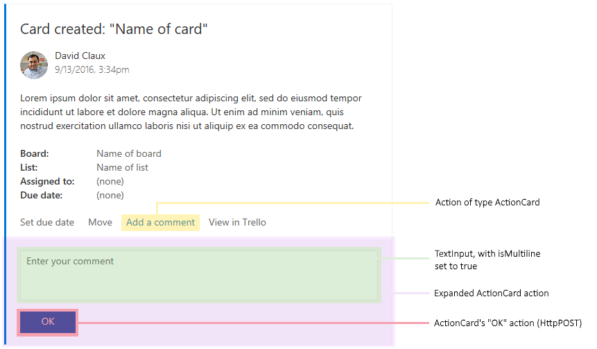
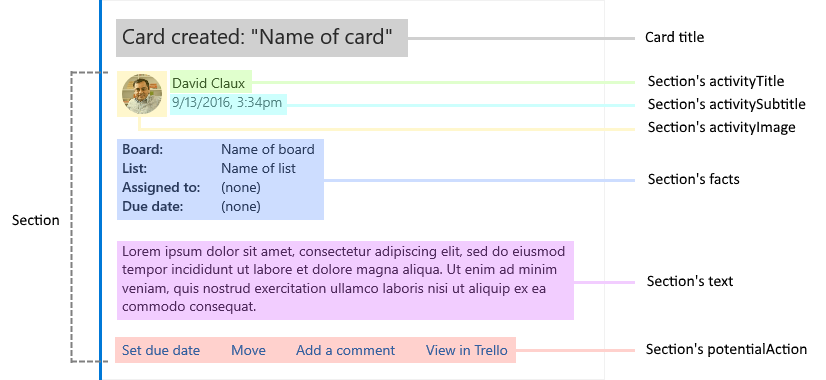
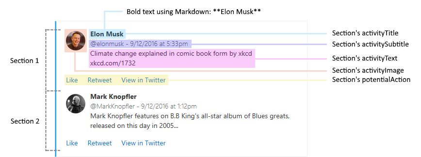

Teams 可以讓使用者透過 Incoming Webhooks 的方式將資訊以 JSON 的方式傳入並用卡片的形式呈現，而卡片的內容也可以定義一些動作讓使用者做操作，例如收集資訊並回傳到指定的服務去(API)，但到底要怎麼傳，跟怎麼驗證，這部分的文件被藏在我認為還蠻角落的地方，透過這篇筆記稍微整理一下
注意: 這邊所紀錄的內容的資料來源是
Legacy actionable message card reference
MessageCard
挑幾個跟 Action 比較有關的欄位出來
correlationId: log 使用，在 HttpPost 時，會以Card-Correlation-Id紀錄，應和Action-Request-Id一同被紀錄起來供後續使用，Action-Request-Id由 Office 365 產生，可以用來查使用者的執行哪一個動作potentialAction：希望操作的動作會定義在這一個區塊，數量最多能放 4 個動作。在 Section 裡也可以放potentialAction
Action 行為
Action 可以有下列幾種行為模式
- OpenUri
- HttpPost
- ActionCard
- InvokeAddInCommand
OpenUri
功能: 打開網址或 APP
建議:
- 使用此方式提供使用者另開網站，而非將連結放到主文內
- 至少附上一個連結，讓使用者可以看到更多資訊
- 應為
potentialAction的最後一個動作
格式
1 | { |
-
name: 按鈕顯示名稱，使用動詞命名 -
targets: 可以針對使用者設備的作業系統版本提供對應的連結1
2
3
4
5"targets": [
{ "os": "default", "uri": "https://yammer.com/.../123" },
{ "os": "iOS", "uri": "yammer://u/123" },
{ "os": "android", "uri": "yammer://u/123" }
]
HttpPost
這一個應該會是最常用的行為，基本上就是做一個 API 呼叫
功能: 呼叫外部 web 服務
驗證: 如需驗證發送者的身份，除了可以在 URL 後面掛 token 驗證外，也可以參考此文件內的方式
格式:
1 | { |
- body 是呼叫 HttpPost 要傳的內容，下面會介紹搭配
ActionCard的方式做出動態收集資料的行為 - bodyContentType: 預設為
application/json，另外一個有效的設定值為application/x-www-form-urlencoded - headers: 就字面上意思，想要在發 HttpPost 時放在 header 區塊的資訊
執行過程: 整個 HttpPost 的發送行為會由微軟代為發送，並不是由 Client 端直接發送，這也是為什麼在驗證篇的文件中，提到可以驗證 http requests 是否來自微軟
被呼叫服務的回應方式
當被呼叫的服務執行完動作時，需要給 Teams 一些回應，以下有幾點文件上提到的小叮嚀
- Response 的 header 中，要加入
CARD-ACTION-STATUS，而資訊應清晰，不需要加呼叫者的名字或是執行時間，因為這部分的資訊會被自動加上 - Refresh Card: 可回傳一個完整的 MessageCard 內容來更新使用者發出動作的同一卡片資訊，例如移除原本卡片中的動作項目，或是更新同張卡片上的資訊內容
- 重點: 在 Header 加入
CARD-UPDATE-IN-BODY: TRUE - 不要使用 Refresh Cards 做精靈式回答的工作
- 至少包含一個
OpenUri連結回原本系統
- 重點: 在 Header 加入
ActionCard

功能: 收集使用者輸入資訊，收集到的資訊可用在 HttpPost 和 OpenUri
格式:
1 | { |
isRequried: 欄位是否必填value: 預設值- line 17: 使用大括弧包住變數，可使用變數的來源為
inputs區塊定義的物件並以 input 的id為變數名稱，格式{{.value}}
可使用的輸入欄位型態有
-
TextInput
1
2
3
4
5
6
7{
"@type": "TextInput",
"id": "comment",
"isMultiline": true,
"maxLength": 250,
"title": "Input's title property"
}isMultiline: 為 true 時會顯示 textarea, 為 false 時會顯示 inputmaxLength: 設定可輸入文字的上限值
-
DateInput
1
2
3
4
5
6{
"@type": "DateInput",
"id": "dueDate",
"includeTime": false
"title": "Input's title property"
}includeTime: 是否要顯示時間設定
-
MultichoiceInput
1
2
3
4
5
6
7
8
9
10
11
12{
"@type": "MultichoiceInput",
"id": "list",
"title": "Pick an option",
"isMultiSelect": false,
"style": "expanded",
"choices": [
{ "display": "Choice 1", "value": "1" },
{ "display": "Choice 2", "value": "2" },
{ "display": "Choice 3", "value": "3" }
]
}isMultiSelect: 設定為true時，會顯示成 checkbox ，當設定為false時，會顯示成 radio 。預設值為 `falsestyle: 當isMultiSelect為 false 時且 style 設定為expanded，畫面會盡量將選項全部顯示。預設值為normal
InvokeAddInCommand
這行為目前看起來只能用在 Offie Add-in，暫時不研究，Reference: InvokeAddInCommand action
範例
範例一

1 | { |
範例二

1 | { |
驗證
-
Action URL 必須是 HTTPS
-
可以驗證 hearer token 是否合法
-
可驗證
aud是否與目前 service base URL 相符 -
可使用 URL 掛載 token 的方式作驗證
-
bearer token 包含了 AAD Office 365 User 資訊